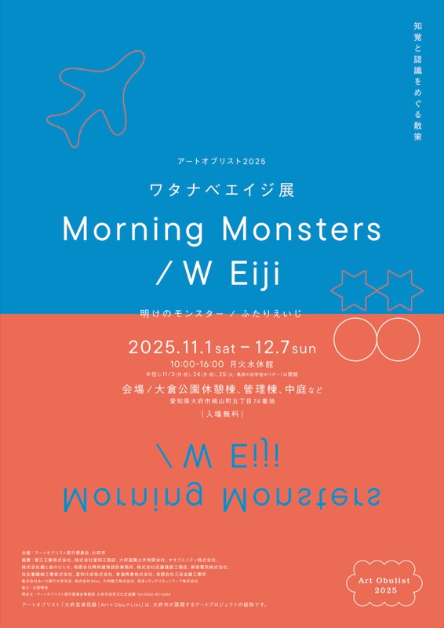
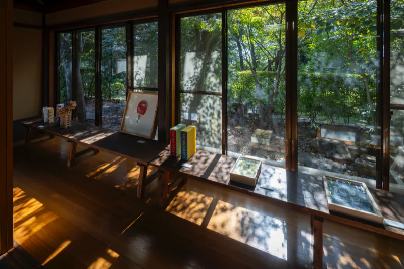
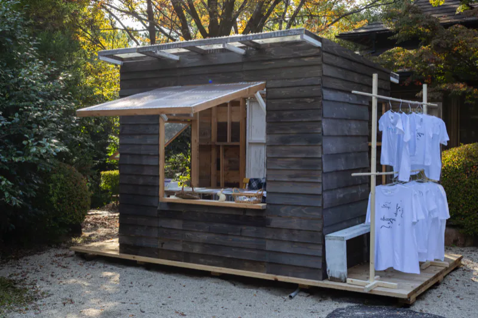
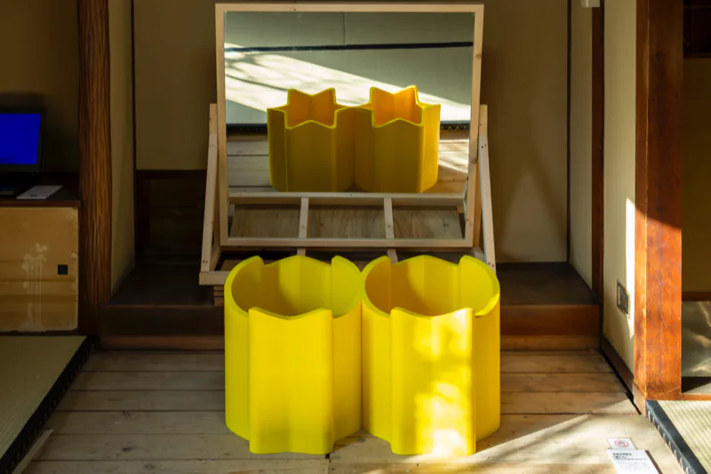
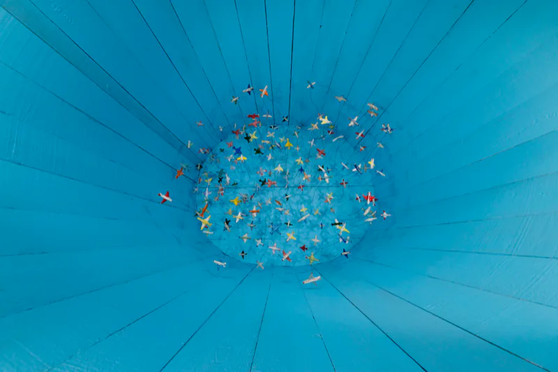
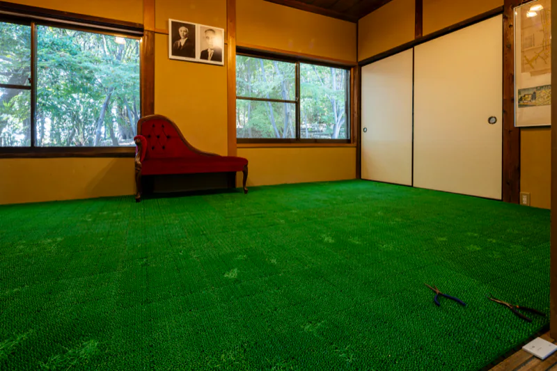

Art Obulist 2025 ワタナベエイジ展「Morning Monsters / W Eiji」Eiji Watanabe “Morning Monsters / W Eiji”
明けのモンスター／ふたりえいじ。管理棟に神経科学者の展示、休憩棟に美術家の作品。秋の公園の道が二つを結んだ。
- 会期
- 2025年11月1日（土）–12月7日（日）。会期は終了している。
- 開館
- 木・金・土・日・祝 10:00–16:00。月火水休み（11/3、11/24、11/25 は開館）
- 会場
- 大倉公園 管理棟、休憩棟、中庭など（愛知県大府市桃山町）
- 料金
- 入場無料
- 主催
- アートオブリスト実行委員会、大府市
- 企画・制作
- 山本さつき＋アートオブリスト実行委員会
- 実行委員長
- 渡辺英司
- 協力
- 北岡明佳、ボン靖二
- テーマ
- 「知覚」と「認識」
アートオブリスト史上、最多の来場者を記録した。タイトル「Morning Monsters」は、英司の個展「Morning Star（明けの明星）」（2024）と英治の錯視作品「Morning Monster」（2020）の名を融合させたもの。
アートオブリスト（大府芸術目録｜Art＋Obu＋List）は、大府市が展開するアートプロジェクトの総称。2025年は設立10周年。

会場構成Venue
大倉公園内の二つの建物を、公園の実空間が結ぶ。来場者は科学の側から歩き始め、公園を抜けて美術の側に着く。
- 1

管理棟の窓に取り付けた《岡崎げんき館錯視》の箱写真提供：アートオブリスト実行委員会 管理棟＝渡辺英治。錯視の展示、質問箱コーナー、17冊の手書きノート、進化シミュレーター。奥の壁面に「進化ストリーム」の壁面図。
- 2
茅葺門。暖簾とバナーが掛けられた

大倉公園の茅葺門に掛かる暖簾とバナー 2025.11.22写真提供：アートオブリスト実行委員会 - 3
中央広場

紅葉の園路。奥に茅葺門のバナー 2025.11.22写真提供：アートオブリスト実行委員会 - 4
奥の門。《蝶瞰図（エデンのトンネル）》の切り抜きが道を示す
- 5

休憩棟の窓辺。⑰魔球 ⑲ハンドメイド ⑳メモリーズ ㉑ジェンガ撮影：青木兼治 休憩棟＝渡辺英司。作品24点。畳の部屋に《エデンの海》《星の名前》。
- 6
中庭の小屋《変身もんどり庵》。出張喫茶 mamedoi、Tiny shop the W Eiji、パフォーマンスの会場

㉔《変身もんどり庵》と Tiny shop the W Eiji撮影：青木兼治


秋の大倉公園の中を管理棟から茅葺門、中央広場、奥の門を抜けて、休憩棟に向かう実空間の回路は、最上のオルタナティブスペースだった。
二人の交差点Crossings
-
ビックリハウス
英司が制作した、ボールが坂を登る小屋。英治は作っているところを見ていない。
英治の提案。視覚情報と平衡感覚のズレで、物理的に起こり得ない現象が起きているように感じる。
唯一の共作
-
トイレットペーパーの左右
左に英司の⑮《トイレットティッシュ》。一つのトイレットペーパーがティッシュペーパーの形につながる作品は、言語の問題。
右に《エビングハウス錯視》（英司の作品リスト⑯、英治による提示）。芯の大きさが違って見える提示は、知覚の問題。
右がサイエンスで左はアートなんですね。同じ材料なんだけど。

左⑮《トイレットティッシュ》（英司 作）、右⑯《エビングハウス錯視》（英治 提示）撮影：青木兼治 同じ材料で解釈が違う。山本さつきはこの並置を、「自分は何を見ているのか」と「自分は何を見せられているのか」の違いとして、本展の性格を象徴するものと位置づけた。
-
エデンの海

⑥《エデンの海》 休憩棟の畳の間撮影：青木兼治 図鑑の魚を切り抜き、畳の間に広げた。

《エデンの海、錯視から解放された魚》 試作プリント。下地は北岡明佳「でっカー錯視」写真提供：渡辺英治／錯視画像：北岡明佳 ⑫《エデンの海、錯視から解放された魚》。英司の《エデンの海》を見た英治は「根本がどこか一致する場所があるのでは」と考え、会期中に新作の錯視を加えた。でっカー錯視では遠近感で車の大きさが変わるが、別のレイヤーにいる魚の大きさは一定に見える。
-
蝶瞰図
英司の作品《蝶瞰図》。図鑑の蝶を切り抜いた連作。

《蝶瞰図（エデンのトンネル）》 二棟をつなぐ園路撮影：青木兼治 英治の展示作品リスト⑯《蝶瞰図（エデンのトンネル）》。英治から英司へのオマージュ。《蝶瞰図》の蝶によって、休憩棟と管理棟をつなぐ道を示した。
-
朝起きたらカラフルな世界
英司が28歳の頃に「解った」と感じた体験。
質問箱に寄せられた「どうしてこういった分野の勉強をしようと思ったのですか」への英治の回答。
朝目がさめるとカラフルですてきな世界がいきなりみえます。これってすごくふしぎなことなんです。
二つの体験が一致した。二人を結んだ言葉である


記録写真Photos

⑬《星の名前》撮影：青木兼治 
②《変身立体（星丸）》 管理棟撮影：青木兼治／発明：杉原厚吉（数学者） 
④《空の夢 / 空の上》撮影：青木兼治 
⑪《錯視立体（兎／家鴨）》 3D プリント、管理棟撮影：青木兼治 英治の展示作品リスト⑪

⑪《常緑 / Ever Green》撮影：青木兼治 英司の展示作品リスト⑪


{kind=link}
{kind=link}
{kind=link}
{kind=link}
{kind=link}
写真を押すと大きく開く。会場と交差点の写真は上の節に、イベントの写真は関連イベントのページにある。記録写真の原本は 734 枚あり、ここでは記録写真 14 枚とフライヤー 1 枚を掲載した。